Creates a ggplot2 basemap for further plotting of variables.
basemap( type = "panarctic", limits = NULL, limits.lon = NULL, limits.lat = NULL, round.lon = FALSE, n.lon.grid = 3, lon.interval = NULL, round.lat = FALSE, n.lat.grid = 3, lat.interval = NULL, keep.glaciers = TRUE, legends = TRUE, legend.position = "right", bathymetry = FALSE, bathy.style = "poly_blues", bathy.detailed = FALSE, bathy.border.col = NA, bathy.size = 0.1, land.col = "grey60", land.border.col = "black", land.size = 0.1, gla.col = "grey95", gla.border.col = "black", gla.size = 0.1, grid.col = "grey70", grid.size = 0.1, currents = FALSE, arc.col = "blue", atl.col = "#BB1512", current.size = 0.5, current.alpha = 1, label.print = TRUE, label.offset = 1.05, label.font = 8, base_size = 11, plot = TRUE )
Arguments
| type | Type of map area. Options: "panarctic", "barentssea", "svalbard", "mosj", "kongsfjorden", "kongsfjordbotn", "kronebreen", or "rijpfjorden". See details. |
|---|---|
| limits | Map limits. One of the following options:
|
| limits.lon, limits.lat | Numeric. The level of rounding for longitude and latitude, respectively, when using automatic limits (character vector in |
| round.lon, round.lat | Numeric value specifying the level of rounding to be used to plot longitude and latitude grid lines. Override |
| n.lon.grid, n.lat.grid | Numeric value specifying the number of longitude and latitude grid lines, respectively. Alternatively use |
| lon.interval, lat.interval | Numeric value specifying the interval of longitude and latitude grids for the "panarctic" map |
| keep.glaciers | Logical indicating whether glaciers should be kept for the Svalbard maps. Setting this to |
| legends | Logical indicating whether legends for bathymetry and/or ocean currents should be shown. Can be a single logical applying to all legends or a logical vector of length 2. The first element applies for bathymetry and the second for ocean currents. |
| legend.position | Position for ggplot2 legend. See the argument with the same name in theme. |
| bathymetry | Logical indicating whether bathymetry should be added to the map. Relatively slow. |
| bathy.style | Character defining the style for bathymetry contours. Alternatives:
|
| bathy.detailed | Logical indicating whether detailed bathymetry shapefiles should be used. Works for Svalbard maps only (see Source). Very slow due to the large file size. Use for limited areas, such as fjords, only. |
| land.col, gla.col, grid.col | Character code specifying the color of land, glaciers and grid lines, respectively. Use |
| land.border.col, gla.border.col, bathy.border.col | Character code specifying the color of the border line for land, glacier, and bathymetry shapes. |
| land.size, gla.size, bathy.size, grid.size | Numeric value specifying the width of the border line for land and glacier shapes as well as the width of the grid lines, respectively. See details for explanation about line widths. |
| currents | logical indicating whether Arctic and Atlantic ocean currents for the Barents Sea should be plotted. See details. |
| arc.col, atl.col | Character code specifying the color for Arctic and Atlantic current arrows. |
| current.size | Either a numeric value specifying the width of ocean current arrows or "scaled" for ocean currents that are approximately scaled to their magnitude. |
| current.alpha | Value between 0 and 1 defining the transparency of current arrows. |
| label.print | Logical indicating whether labels should be printed for polar stereographic maps. |
| label.offset | Offset between the round polar stereographic maps and longitude labels. Optimized for a pdf output. Use 1.1 for larger size figures. |
| label.font | Numeric value specifying the font size for labels in polar stereographic maps. Note that this value defines the actual font size in points, not the |
| base_size | Base size parameter for ggplot. See theme_bw. |
| plot | logical indicting whether a ggplot should be returned. If |
Source
Svalbard maps originate from the Norwegian Polar Institute. Distributed under the CC BY 4.0 license (terms of use).
Barents Sea and pan-Arctic land shapes are downloaded from Natural Earth Data. They use the
ne_10m_landandne_50m_land(v 4.0.0) datasets, respectively. Distributed under the CC Public Domain license (terms of use).Pan-Arctic bathymetry shapefile is generalized from General Bathymetric Chart of the Oceans One Minute Grid.
Barents Sea bathymetry shapefile is generalized from IBCAO v3.0 500m RR grid. Should be cited as Jakobsson, M., et al. The International Bathymetric Chart of the Arctic Ocean (IBCAO) Version 3.0. Geophys. Res. Lett. 2012, 39:L12609.
Svalbard fjord bathymetry shapefiles are from the Norwegian Mapping Authority. Distributed under the CC BY 4.0 license.
Value
If plot = TRUE, returns a ggplot2 map, which can be assigned to an object and modified as any ggplot object. Otherwise returns a list of basemap data.
Details
The function uses ggplot2 and shapefiles to plot maps of Svalbard and other polar regions. The Svalbard shapefiles are detailed and glaciers varyingly up-to-date (2017 for Kongsfjorden; mostly 2015 for the rest, but not systematically checked) detailed The map type is defined using the type argument and map limits can be controlled with the limits argument. Currently implemented map types:
"panarctic". A polar stereographic map of the Arctic with a limit at 40 degrees North. This map type can be used to plot maps of any location north of 40 degrees latitude.
"barentssea". A 1:10 000 000 map of the Barents Sea.
"svalbard". Detailed 1:250 000 map of Svalbard land and glaciers. This option is slow (approx. 25 seconds) due to the large file size.
"mosj" shows Kongsfjoden and Fram Strait as sampled during Norwegian Polar Institute's (NPI) MOSJ campaigns. Some glaciers can be older than 2015.
"kongsfjorden" shows Kongsfjorden and parts of Prins Karls Forland. Glaciers are from 2015 to 2017.
"kongsfjordbotn" shows Kongsvegen, Kronebreen, Kongsbreen and Conwaybreen. Glaciers are from July 2017.
"kronebreen" shows mostly Kronebreen and Kongsvegen. Glacier fronts are from July 2017.
"rijpfjorden" shows NPI's Rijpfjorden to the Arctic Ocean transect. The glaciers have not been updated and might be old.
Svalbard and Barents Sea maps use the "+init=epsg:32633" UTM projection. The polar stereographic maps use "+proj=stere +lat_0=90 +lat_ts=71 +lon_0=0 +k=1 +x_0=0 +y_0=0 +datum=WGS84 +units=m +no_defs +ellps=WGS84 +towgs84=0,0,0" projection. The "mosj", "kongsfjorden", "kongsfjordbotn", "kronebreen", and "rijpfjorden" maps use a subset of the Svalbard shape files and are faster to plot due to a smaller file size. These alternatives give convenient limits for certain regions the main author has worked with recently. New map types can be implemented relatively easily, but require digging into the source code.
Line width (size) aesthetics in ggplot2 generates approximately 2.13 wider lines measured in pt than the given values. If you want a specific line width in pt, multiply it by 1/2.13. Internal functions LS and FS are available to convert line and font sizes in points to ggplot2 equivalents.
Ocean currents for the Barents Sea are implemented, but not peer-reviewed yet. This feature will be improved in the future versions of the package.
See also
Examples
basemap() ## Plots Kongsfjorden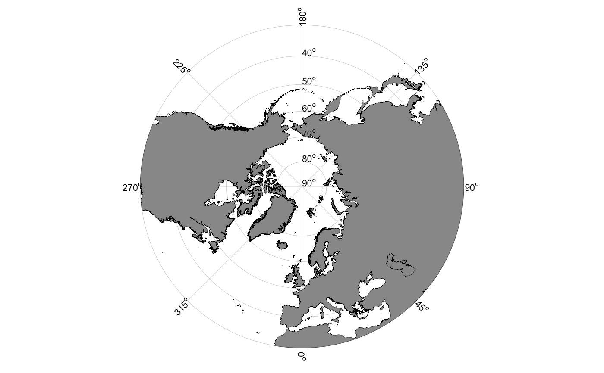## Maps work as normal ggplot2 objects: data(chlorophyll) p <- basemap("mosj") p + geom_point(data = chlorophyll, aes(x = lon.utm, y = lat.utm, size = Chla, color = Chla), shape = 1)## Limiting maps can be done using the limits argument: basemap("kongsfjordbotn", limits = c(12.2,12.65,78.95,79.00))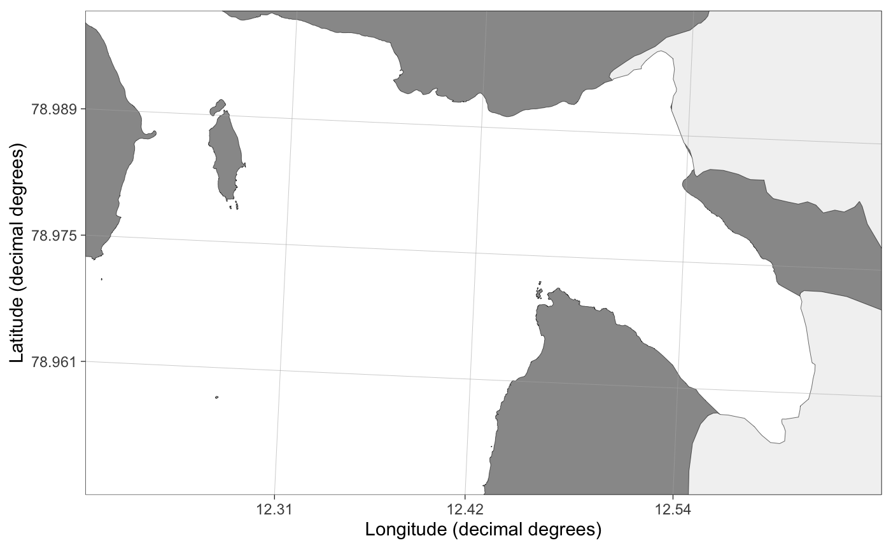## Automatic limits find the boundary of data basemap("barentssea", limits = c("chlorophyll", "lon", "lat")) + geom_point(data = chlorophyll, aes(x = lon.utm, y = lat.utm, size = Chla, color = Chla), shape = 1)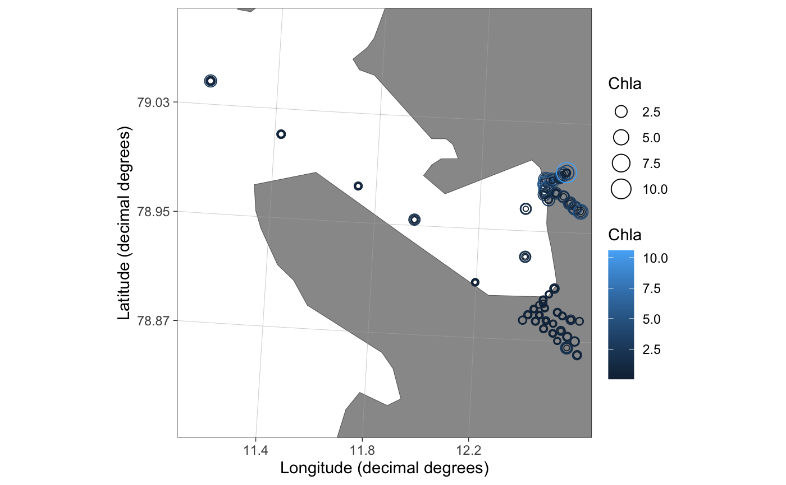## Svalbard map. Warning: this is SLOW basemap("svalbard")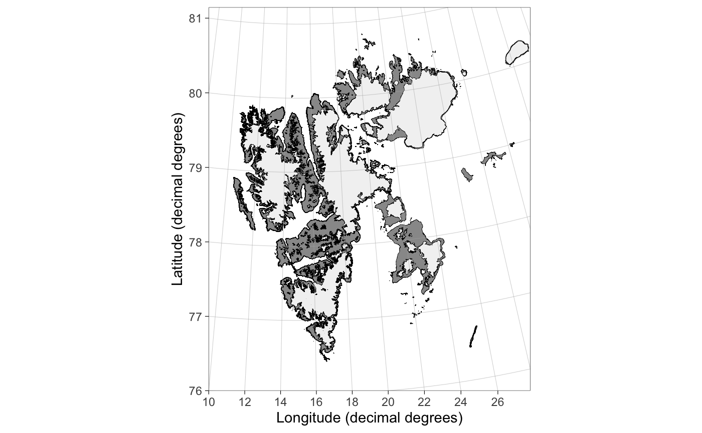## grid.col = NA removes grid lines basemap("svalbard", grid.col = NA, limits = c(10, 28, 79.5, 83))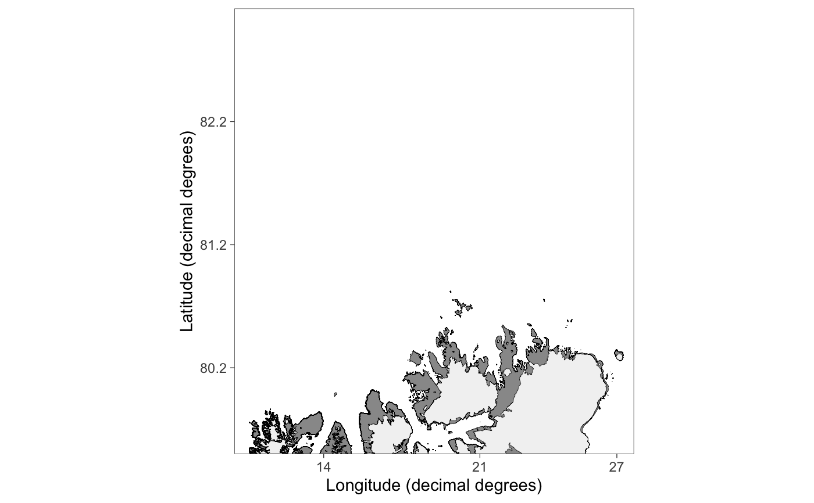## Use round.lat and n.lon.grid arguments ## to control grid lines basemap("svalbard", limits = c(3,24,78.5,82), round.lat = 1, n.lon.grid = 4)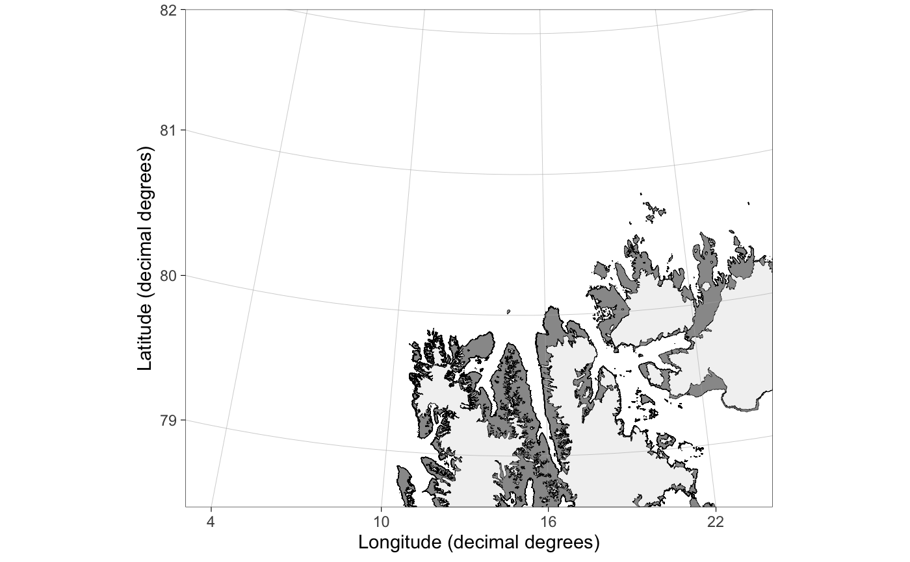## Modify axis labels basemap("barentssea") + xlab("Lat")basemap("barentssea") + labs(x = NULL, y = NULL) # remove axis labs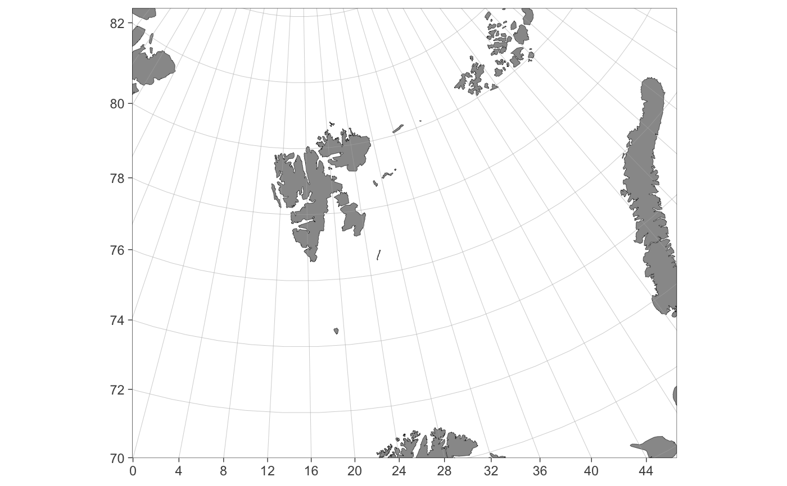basemap("barentssea") + theme(axis.title = element_blank()) # another way## Barents Sea basemap("barentssea")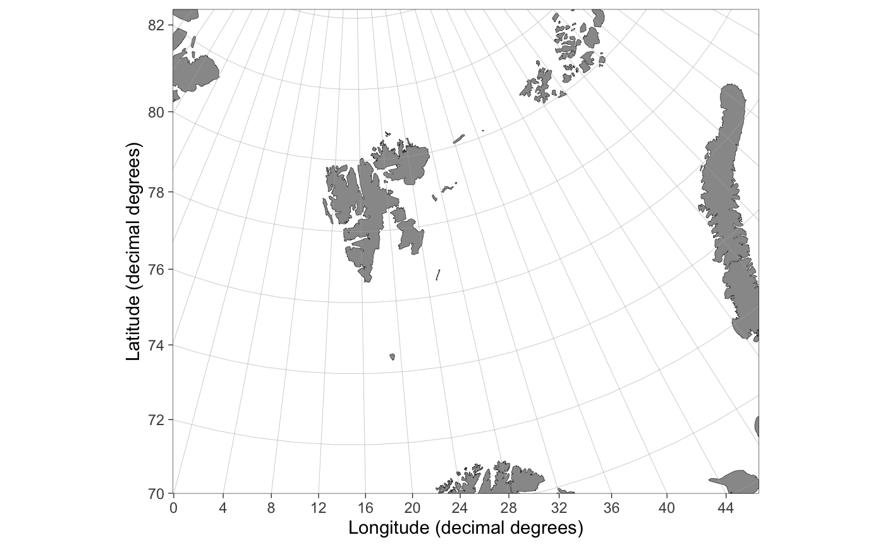## Barents Sea map also prints mainland Norway, ## but the projection is not optimal. basemap("barentssea", limits = c(12, 24, 68, 71))## Polar stereographic pan-Arctic maps basemap("panarctic", limits = 50)## To find UTM coordinates to limit a pan-Arctic map: basemap("panarctic") + theme_bw()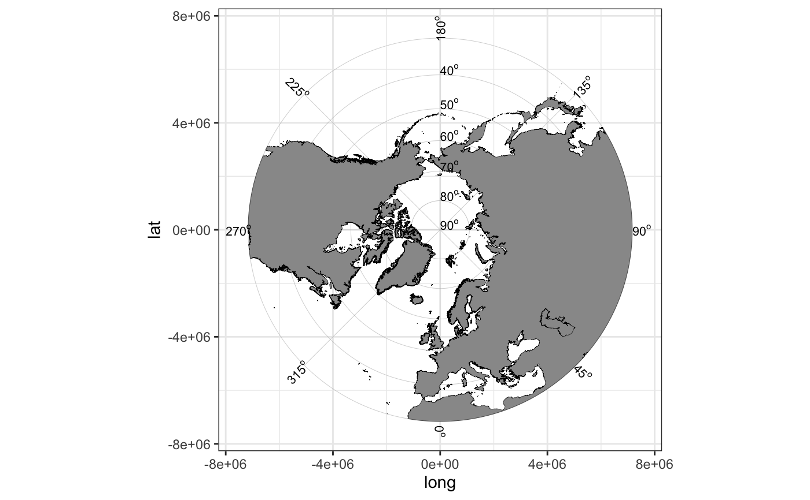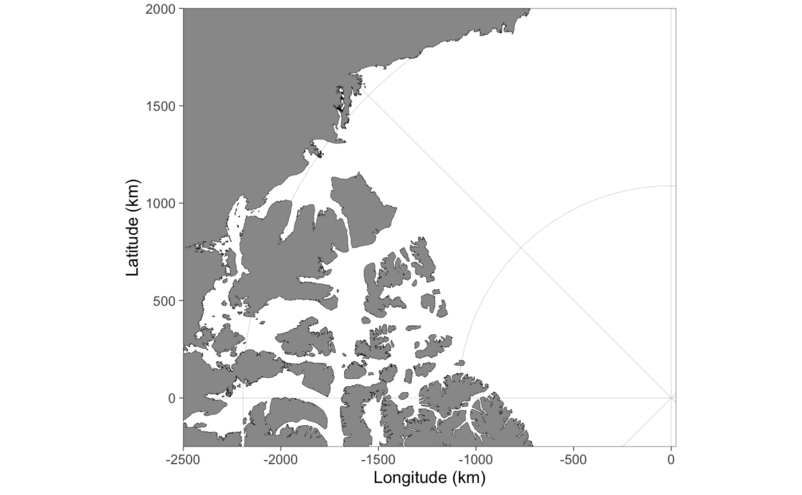## Bathymetry can be added using the bathymetry argument basemap("panarctic", limits = 50, bathymetry = TRUE)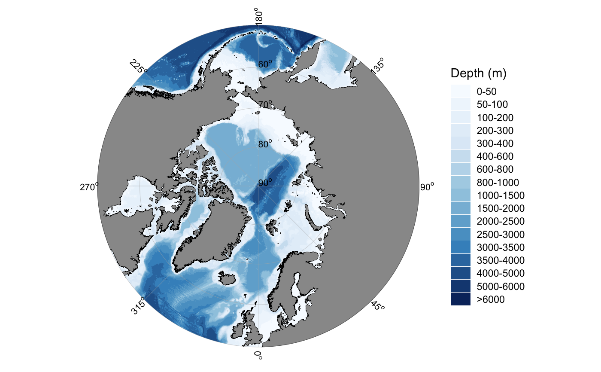## Detailed bathymetry is available for some ## Svalbard fjords basemap("kongsfjorden", bathymetry = TRUE, bathy.detailed = TRUE)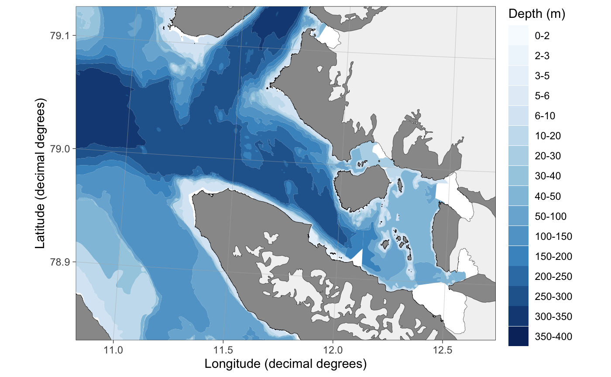## Ocean currents for the Barents Sea basemap("barentssea", bathymetry = TRUE, currents = TRUE)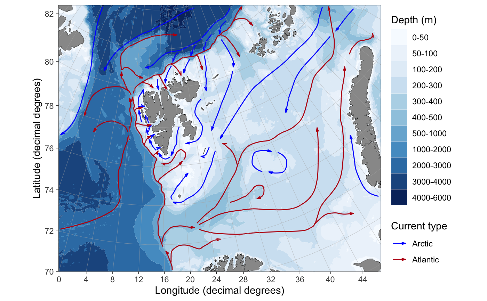basemap("barentssea", bathymetry = TRUE, currents = TRUE, current.size = "scaled", legends = c(FALSE, TRUE))